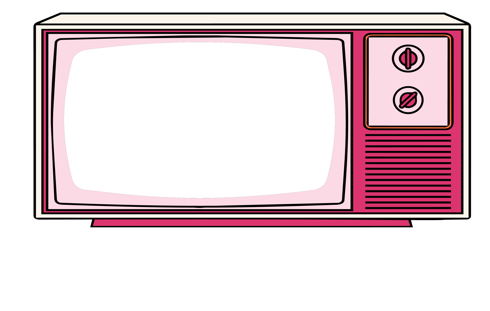
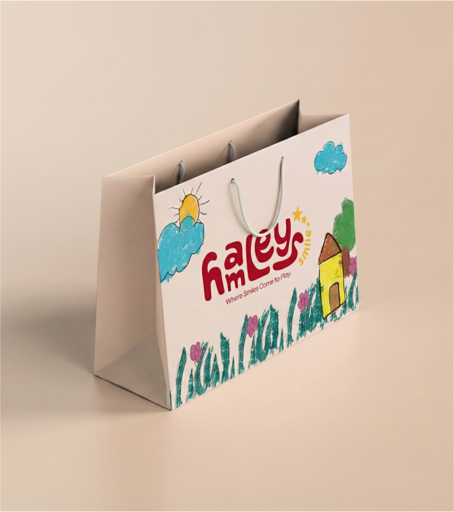
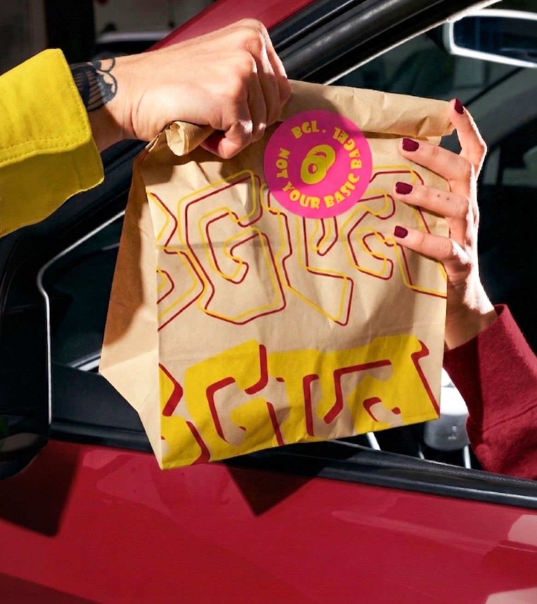
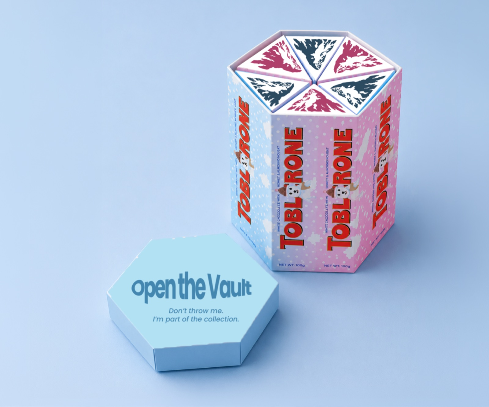
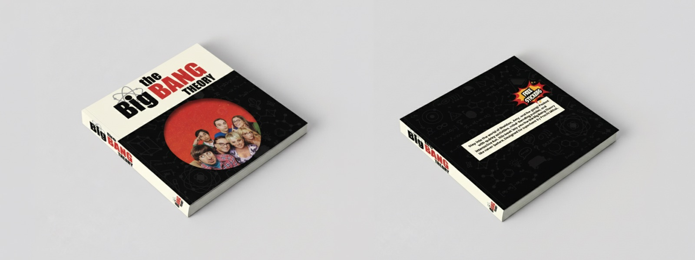

Everything you’re about to see started with one question.
WHY?
Because I’ve always believed the best ideas begin with curiosity.

Hi, I’m PRACHI MITTAL
Internships
& Clients
The Way I See The World
I don’t enjoy designing for the sake of making things look good. I enjoy understanding why something exists, what story it needs to tell, and how design can help people connect with it.
The Process
The Nautilus shell became a metaphor for the way I learn. It grows one chamber at a time, and I believe design works the same way. Every project, experiment, and mistake adds another layer.
The Impact
Today, I help brands and ideas find their voice through research, strategy, storytelling, and thoughtful design. From creating visual identities to advertising campaigns, I build work that is meaningful.
“I don’t think great designers have all the answers. I think they stay curious enough to keep asking better questions.”
Projects


 Common Ground
Common Ground

Hamleys
BGL
Toblerone
Big Bang TheoryWhat They Had to Say
Your Turn
You’ve reached the end of my story. I’d love to hear yours.